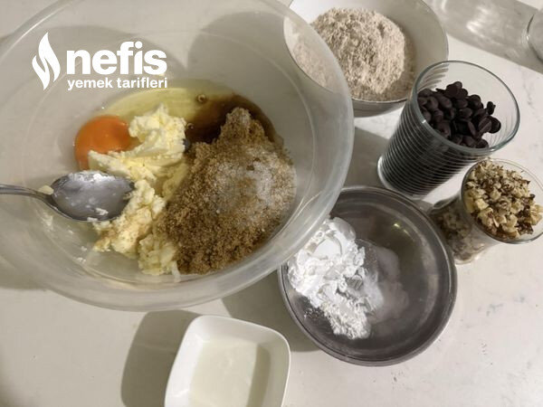

🍽️ 8-10 kişilik⏱️ Hazırlık: 10 dk🔥 Pişirme: 15 dk🏷️ Kurabiye Tarifleri
Malzemeler
- 6 yemek kaşığı tereyağı (90gr)
- 1 yumurta
- 2 yemek kaşığı şeker
- 1 su bardağınan 1 parmak kadar eksik esmer şeker
- 2 su bardağı kadar tam buğday unu(200 gr)
- 1 yemek kaşığı nişasta
- 1 yemek kaşığı süt
- Yarım çay kaşığı karbonat
- Yarım çay kaşığı kabartma tozu
- Yarım çay kaşığı tuz
- 1 su bardağı damla çikolata
- Yarım su bardağı iri kıyılmış ceviz veya fındık parçacıkları
Hazırlanışı
- Oda sıcaklığındaki tereyağı ve şekeri karıştırıyoruz.
- Yumurta ve sütü ilave ederek karıştırıyoruz.
- Un, nişasta karbonat, kabartma tozu, ve tuzu ilave edip karıştırıyoruz.
- Ceviz ve çikolata parçalarını da karıştırıyoruz.
- Yoğurduğumuz kurabiye hamurunu en az birkaç saat buzdolabında bekletiyoruz ( akşamdan da hazırlayıp 1 gece bekletebiliriz) hamuru çıkarıp yarım saat kadar bekletip yuvarlayıp biraz yassılaşıp tepsiye diziyoruz. ( rulo yapıp keserekte yapabiliriz).
- 180 derece fırında 15 dakika kadar üzeri hafif çatlayınca fırından çıkarıyoruz. Fırından çıkınca yumuşak oluyor, soğuyunca sertleşiyor.